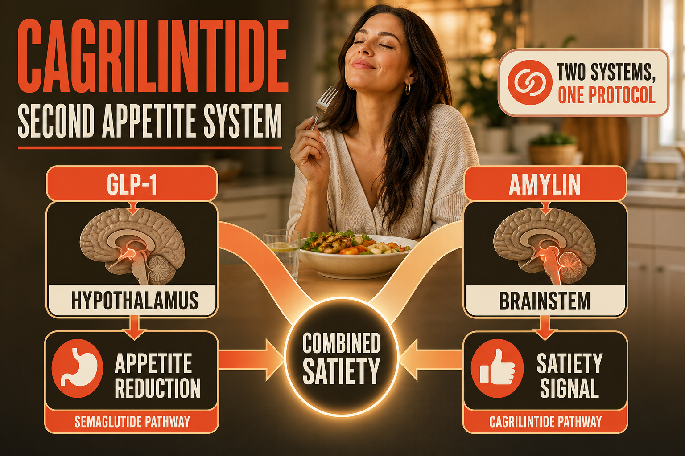

What Cagrilintide Is
Cagrilintide is a synthetic long-acting analog of amylin - a peptide hormone co-secreted with insulin from pancreatic beta cells. Amylin works alongside insulin to regulate glucose and appetite through mechanisms distinct from GLP-1: it slows gastric emptying (like GLP-1), reduces glucagon secretion (like GLP-1), and - uniquely - activates amylin receptors in the area postrema of the brain, a region involved in satiety signaling that GLP-1 receptors do not predominantly target.
Cagrilintide was developed by Novo Nordisk specifically to be combined with semaglutide in a single formulation called CagriSema (also called AM833/OW). The rationale: semaglutide and cagrilintide target different receptor systems, different brain regions, and different aspects of appetite and glucose regulation - making them genuinely additive rather than redundant.
The Phase 3 REDEFINE trials are evaluating CagriSema (2.4mg semaglutide + 2.4mg cagrilintide weekly) in people with obesity. Early data from the Phase 2 SCALE-ENDO trial showed mean weight loss of 15.6% with cagrilintide alone and up to 24% with CagriSema - approaching retatrutide territory through a dual mechanism from a completely different compound class.
Cagrilintide as a standalone compound (without semaglutide) exists in the research peptide market. In combination with semaglutide it represents one of the most significant next-generation weight management combinations in development.
Plain English Version
The Second Appetite System Nobody Was Talking About
When GLP-1 compounds became widely discussed, the conversation focused on one hormone, one receptor, one appetite system. Ozempic. Wegovy. The GLP-1 pathway. One button on the remote.
What the conversation mostly missed is that your body has more than one appetite regulation system. Amylin is the hormone that your pancreas releases every time you eat - alongside insulin - to tell the brain's satiety center that food arrived and more does not need to come in immediately. It is a different signal, through a different receptor, reaching a different part of the brain than GLP-1.
Cagrilintide activates the amylin receptor system. When combined with semaglutide's GLP-1 receptor activation, you are activating two completely separate appetite regulation systems simultaneously - two remotes for two different TV systems in the same house. The satiety signal is coming from two independent sources.
This is why the early CagriSema data looks so much more significant than semaglutide alone. It is not doing the same thing twice - it is doing two genuinely different things that both reduce appetite and food intake through different biological pathways.
One sentence: Cagrilintide activates the amylin receptor system - a completely separate appetite pathway from GLP-1 - producing genuinely additive weight loss when combined with semaglutide.
How To Picture It

How It Works
Cagrilintide binds amylin receptors (AMY1, AMY2, AMY3 - combinations of calcitonin receptor and RAMP proteins) primarily in the area postrema and nucleus tractus solitarius - brainstem regions involved in satiety and nausea regulation. Amylin receptor activation slows gastric emptying, suppresses post-meal glucagon, and creates a satiety signal that is genuinely independent of and additive to GLP-1 receptor-mediated satiety. The long-acting modification allows once-weekly dosing versus native amylin's half-life of minutes.
Documented Benefits
independent of and additive to GLP-1 mechanism
approaching retatrutide levels
Dosing Protocol
Cagrilintide is in late-stage clinical development. Research-grade dosing reflects clinical trial protocols:
| Phase | Dose | Frequency | Notes |
|---|---|---|---|
| Starting | 0.25mg | Weekly | Following Phase 3 titration |
| Step 2 | 0.5mg | Weekly | After 4 weeks |
| Step 3 | 1mg | Weekly | After 4 weeks |
| Step 4 | 1.7mg | Weekly | After 4 weeks |
| Target | 2.4mg | Weekly | Phase 3 target dose |
| With semaglutide | 2.4mg each | Weekly | CagriSema combination |
Reconstitution Standard
CAG (3mg vial) + 2ml BAC water = 1.5mg/ml 0.5mg = 33 units | 1mg = 67 units | 2.4mg = 160 units (use 2ml syringe)
Dosage Build-Up Timeline
- Week 1-4: 0.25mg - tolerance building
- Week 5-8: 0.5mg - first therapeutic step
- Week 9-12: 1mg - early therapeutic range
- Week 13-16: 1.7mg - approaching target
- Week 17+: 2.4mg - Phase 3 target dose
Common Mistakes
RETA already has a GLP-1 component; adding semaglutide plus cagrilintide creates overlapping GLP-1 coverage that requires careful dosing consideration
the combination data shows additive effects; standalone cagrilintide is meaningful but less powerful than the combination
same patience principle as all GLP-1 class and amylin compounds
amylin receptor activation in the area postrema can cause nausea similar to GLP-1 compounds, particularly in the first weeks at each dose level
Contraindications And Cautions
amylin receptor system overlaps with calcitonin receptor; similar thyroid caution applies
discuss cumulative effects with a physician
What To Track
- Body weight weekly
- Waist circumference monthly
- Nausea and GI symptoms especially at each dose increase
- Fasting glucose and HbA1c
- Energy levels weekly
Stacks Well With
- Semaglutide - the primary documented combination (CagriSema); additive mechanisms
- KLOW or NAD+ - supportive protocols alongside metabolic compound
- Does NOT stack simply with retatrutide - RETA already covers GLP-1 and more; CagriSema adds amylin to GLP-1, not amylin to triple agonist
Sources
- Novo Nordisk REDEFINE Phase 3 trials. ClinicalTrials.gov NCT05035095. clinicaltrials.gov
- SCALE-ENDO Phase 2 CagriSema data. Novo Nordisk. novonordisk.com
- Frias JP et al. Cagrilintide Phase 1/2 results. NEJM. pubmed.ncbi.nlm.nih.gov
- PubMed: amylin receptor GLP-1 additive weight loss. pubmed.ncbi.nlm.nih.gov
For educational and research documentation purposes only. Not medical advice. Always speak with a qualified healthcare professional before making health decisions.